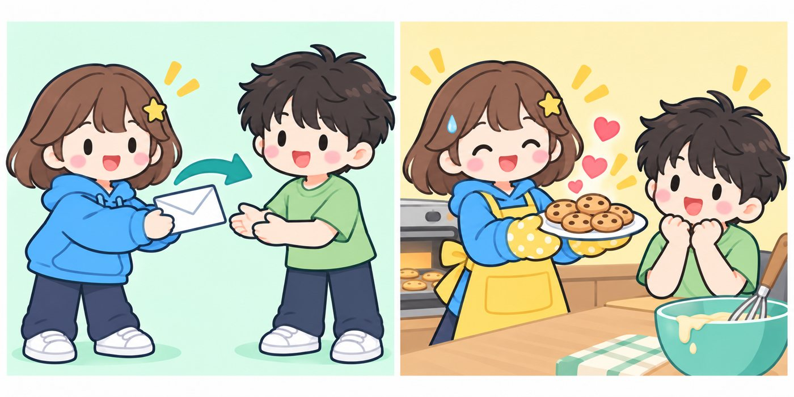

문장의 형식
- 감각동사 look, sound, smell 뒤에 형용사를 쓸 수 있다.
- ‘~에게 …을 주다’ 문장을 to, for를 써서 바꿔 쓸 수 있다.
- 목적어 뒤에 오는 말(명사·형용사·to부정사·동사원형)을 구별할 수 있다.
This soup smells good. 이 수프는 좋은 냄새가 난다. 〈smell + 형용사〉
You look sleepy this morning. 너는 오늘 아침 졸려 보인다. 〈look + 형용사〉
My uncle gave me a new backpack. 삼촌이 나에게 새 배낭을 주셨다.
My uncle gave a new backpack to me. 〈물건 + to + 사람〉
My friends call me Sunny. 친구들은 나를 써니라고 부른다.
Exercise keeps you healthy. 운동은 너를 건강하게 유지해 준다.
My mom wants me to read more books. 엄마는 내가 책을 더 많이 읽기를 원하신다.
- Unit 1보어가 있는 문장, 주는 문장 p.10
- Unit 2목적격보어의 여러 형태 p.17
Mr. Lee made us clean the classroom. 이 선생님은 우리에게 교실을 청소하게 하셨다.
My parents let me stay up late on Fridays. 부모님은 금요일마다 내가 늦게까지 깨어 있게 해 주신다.
I heard someone call my name. 나는 누군가 내 이름을 부르는 것을 들었다.
We saw a cat crossing the road. 우리는 고양이가 길을 건너고 있는 것을 보았다.

보어가 있는 문장, 주는 문장
문장의 모양은 동사 뒤에 무엇이 와야 뜻이 완성되는지로 정해져요. 이번 Unit에서는 주어를 설명하는 말(보어)이 오는 문장과, ‘~에게 …을’ 두 가지를 받는 문장을 배워요.
+ 형용사
sweetly → sweet

감각동사의 두 얼굴
smell, taste, feel은 뜻이 둘이에요.- ‘~한 냄새가 / 맛이 / 느낌이 나다’ → 뒤에 형용사, 진행형 ×
- ‘냄새를 맡다 / 맛보다 / 만져 보다’ → 뒤에 목적어, 진행형 ○
This milk smells bad.
이 우유는 상한 냄새가 난다.
Jun is smelling the flowers.
준은 꽃 냄새를 맡고 있다.
감각동사는 눈·귀·코·혀·피부로 느낀 것을 말하는 동사예요. 뒤에 주어의 상태를 설명하는 말이 와야 문장이 끝나는데, 이렇게 주어를 설명해 주는 말을 보어라고 해요. 감각동사의 보어 자리에는 형용사가 와요. 부사는 꾸미는 말이라 보어 자리에 올 수 없어요(☞ Chapter 09 p.184).
| 감각동사 | 뜻 | 예 |
|---|---|---|
| look | ~해 보이다 | look happy, look tired |
| sound | ~하게 들리다 | sound great, sound strange |
| smell | ~한 냄새가 나다 | smell good, smell bad |
| taste | ~한 맛이 나다 | taste sweet, taste salty |
| feel | ~하게 느끼다, ~한 느낌이 들다 | feel nervous, feel soft |
You look sleepy this morning. 463너는 오늘 아침 졸려 보인다. ← 졸린 상태
Your idea sounds great. 464네 생각은 아주 좋은 것 같다. ← 아주 좋은 상태
This soup smells good. 465이 수프는 좋은 냄새가 난다.
These strawberries taste sweet. 466이 딸기들은 단맛이 난다.
I felt nervous before the speech. 467나는 발표 전에 긴장되었다. ← 긴장한 상태
단어sleepy 졸린idea 생각nervous 긴장한speech 발표strange 이상한salty 짠perfect 완벽한blanket 담요sour (맛이) 신bad 상한
~에게 …을
주다
무엇을은 그다음에!

목적어가 바로 오는 동사
뜻은 비슷해도 목적어가 바로 오는 동사(타동사)와, 앞에 전치사가 필요한 동사(자동사)가 있어요.- discuss the plan = talk about the plan
- enter the room = go into the room
- reach Seoul = arrive in Seoul
give, send, show처럼 ‘(누구에게 무엇을) 주다’라는 뜻을 가진 동사를 수여동사라고 해요. 수여동사 뒤에는 목적어가 두 개 와요. 먼저 ‘~에게’에 해당하는 사람(간접목적어), 그다음에 ‘…을’에 해당하는 물건(직접목적어)이 와요.
My uncle gave me a new backpack. 468삼촌이 나에게 새 배낭을 주셨다.
Jiho sent his grandma a birthday card. 469지호는 할머니께 생일 카드를 보냈다.
Can you lend me your umbrella? 470나에게 네 우산을 빌려줄 수 있니?
Ms. Park teaches us science. 471박 선생님은 우리에게 과학을 가르치신다.
Dad made me a sandwich. 472아빠가 나에게 샌드위치를 만들어 주셨다.
| 동사 | 뜻 | 동사 | 뜻 |
|---|---|---|---|
| give | 주다 | teach | 가르쳐 주다 |
| send | 보내 주다 | lend | 빌려주다 |
| show | 보여 주다 | buy | 사 주다 |
| tell | 말해 주다 | make | 만들어 주다 |
② 물건이 it, them이면 이 순서로 쓰지 않고 ‘to + 사람’으로 써요. (☞ POINT 3)
단어backpack 배낭grandma 할머니science 과학lend 빌려주다umbrella 우산email 이메일story 이야기cap 모자ticket 표discuss 논의하다enter 들어가다reach 도착하다
+ 사람
for!
‘~을 위해’ 해 주는
거니까요.

POINT 2의 문장은 물건을 먼저 쓰고 사람을 뒤로 보낼 수 있어요. 이때 사람 앞에 ‘~에게’를 나타내는 말을 붙여요. 상대에게 건네주는 동사는 to, 상대를 위해 해 주는 동사는 for, ask(묻다)는 of를 써요.
| 동사 | 예 | |
|---|---|---|
| to | give, send, show, tell, teach, lend, bring, write, pass | pass the salt to me |
| for | buy, make, cook, get, find | cook dinner for us |
| of | ask | ask a question of you |
Yuna lent her notebook to me. 473유나는 나에게 자기 공책을 빌려주었다.
Please pass the salt to me. 474나에게 소금 좀 건네줘.
Grandpa cooked bulgogi for us. 475할아버지가 우리에게 불고기를 요리해 주셨다.
I found a good seat for my mom. 476나는 엄마에게 좋은 자리를 찾아 드렸다.
Can I ask a question of you? 477너에게 질문 하나 해도 될까?
I gave it to my brother. 478나는 그것을 남동생에게 주었다.
② explain(설명하다), say(말하다), introduce(소개하다)는 목적어를 두 개 쓰지 못해요. 늘 ‘to + 사람’으로 써요.
단어pass 건네주다notebook 공책salt 소금seat 자리explain 설명하다rule 규칙introduce 소개하다diary 일기장sneakers 운동화favor 부탁
to는 화살표, for는 하트
외우지 말고 그림으로 떠올려요She gave a book to me. / I bought a gift for her. — 둘 다 우리말로는 ‘~에게’인데 왜 하나는 to, 하나는 for일까요? ‘give는 to, buy는 for’ 하고 외우기만 하면 처음 보는 동사가 나왔을 때 막혀요. 두 전치사의 그림을 떠올리면 스스로 판단할 수 있어요.

to = 화살표 물건이 상대에게 쓱 넘어가요
건네주기·보내기·보여 주기처럼 물건이나 말이 상대에게 이동하는 데 초점이 있어요.
give · send · show · tell · teach · lend · bring · pass · hand · write · offer
I handed the paper to Mr. Kim. 나는 김 선생님께 그 종이를 건네드렸다.
for = 하트 상대를 위해 정성을 들여요
사 주고·만들어 주고·요리해 주고·찾아 주는 일에는 나의 시간·노력·돈이 들어가요.
buy · make · cook · get · find · build · bake
I baked cookies for my friends. 나는 친구들을 위해 쿠키를 구웠다.
- 물건을 먼저 썼나요? → 사람 앞에 전치사가 꼭 필요해요.
- 물건이 그냥 넘어가면 to, 내 시간·노력·돈을 들여 해 주면 for.
- ask(묻다)만 of: ask a question of you
단어hand 건네주다paper 종이offer 내주다, 제공하다build 짓다 (과거 built)bake 굽다scissors 가위pie 파이doghouse 개집choose 고르다 (과거 chose)
영작할 때 to·for 빠뜨리지 않기
기초가 약할수록 순서대로!물건을 먼저 쓰는 문장을 영작할 때 가장 많이 하는 실수는 사람 앞의 to·for를 빠뜨리는 것이에요. 아래 4단계를 그대로 따라 써 보세요.
| 틀린 문장 | 왜 틀렸을까? | 바른 문장 |
|---|---|---|
| He gave a pen me. (×) | 물건 뒤, 사람 앞에 to가 없어요. | He gave a pen to me. |
| Mom made a cake me. (×) | 사람 앞에 for가 없어요. | Mom made a cake for me. |
| Give me it. (×) | it, them은 물건을 먼저 써요. | Give it to me. |
| She explained me the rule. (×) | explain은 사람을 바로 뒤에 못 써요. | She explained the rule to me. |
- 우리말에서 ‘누구에게’에 ○, ‘무엇을’에 □ 표시를 해요.
- 주어 → 동사 → □(물건) 순서로 써요.
- 동사를 보고 to(화살표)인지 for(하트)인지 정해 ○(사람) 앞에 붙여요.
- 다 쓴 뒤, 물건 바로 뒤에 사람이 전치사 없이 붙어 있지 않은지 확인해요.
괄호 안의 말을 이용하여 물건을 먼저 쓰는 문장으로 영작하세요. POINT 3
스스로 확인: □ 사람 앞에 to / for를 넣었나요? □ 동사의 시제(‘~했다’ → 과거형)를 맞췄나요? (정답 p.4)

단어photo 사진gimbap 김밥lend 빌려주다 (과거 lent)soccer ball 축구공explain 설명하다
Unit Exercise
정답 및 해설 p.4괄호 안에서 알맞은 것을 고르세요. POINT 1-2
물건을 먼저 쓰는 문장으로 바꿔 쓰세요. POINT 3
단어delicious 맛있는lovely 사랑스러운voice 목소리robot 로봇fresh 상쾌한text 문자 메시지eraser 지우개curry 카레truth 진실scarf 목도리a glass of ~ 한 잔
밑줄 친 부분은 모두 틀렸어요. 바르게 고쳐 쓰세요. POINT 1-3
우리말과 같은 뜻이 되도록 괄호 안의 말을 이용하여 쓰세요. POINT 1-3
18개 이하 틀린 문제의 POINT를 다시 읽고, 워크북 Unit 1(워크북 p.2~5)을 풀어요.
단어soft 부드러운plan 계획aunt 이모, 고모a pair of ~ 한 켤레salty 짠photo 사진
목적격보어의 여러 형태
목적어 뒤에 목적어가 누구인지, 어떤 상태인지, 무엇을 하는지 설명하는 말이 한 번 더 오는 문장이 있어요. 이 말을 목적격보어라고 해요. 목적격보어는 앞의 동사에 따라 명사, 형용사, to부정사, 동사원형 등 모양이 달라져요.
명사·형용사
me = sad → 목적격보어

목적격보어가 명사이면 ‘목적어를 ~라고/~로’, 형용사이면 ‘목적어를 ~하게/~한 상태로’라고 해석해요. 목적어와 목적격보어 사이에 be동사를 넣어 말이 되면 목적격보어예요. (The news made me sad. → I am sad.)
My friends call me Sunny. 479친구들은 나를 써니라고 부른다.
We chose Minji our class leader. 480우리는 민지를 우리 반 반장으로 뽑았다.
This song makes me happy. 481이 노래는 나를 행복하게 한다. ← 행복한 상태
Keep your hands clean. 482손을 깨끗하게 유지해라. ← 깨끗한 상태
I found the math test easy. 483나는 그 수학 시험이 쉽다는 것을 알게 되었다.
Don’t leave the door open. 484문을 열어 두지 마라. ← 열린 상태
The news made me sad. 그 소식은 나를 슬프게 했다. (me = sad → 목적격보어)
단어choose 뽑다 (과거 chose)class leader 반장keep 유지하다find 알게 되다 (과거 found)leave 두다doll 인형name 이름을 짓다warm 따뜻한coat 외투
to부정사
want you come
→ want you to come
‘(목적어)가 ~하기를 원하다, (목적어)에게 ~하라고 말하다’처럼 목적어가 앞으로 할 행동을 말할 때는 목적격보어로 to부정사(to + 동사원형)를 써요. 행동을 하는 사람은 주어가 아니라 목적어예요. ‘~하지 말라고’는 to 앞에 not을 붙여요.
| 동사 | 뜻 | 동사 | 뜻 |
|---|---|---|---|
| want | ~가 …하기를 원하다 | expect | ~가 …하기를 기대하다 |
| ask | ~에게 …해 달라고 부탁하다 | allow | ~가 …하는 것을 허락하다 |
| tell | ~에게 …하라고 말하다 | advise | ~에게 …하라고 충고하다 |
My mom wants me to read more books. 485엄마는 내가 책을 더 많이 읽기를 원하신다.
Our coach told us to drink enough water. 486코치님은 우리에게 물을 충분히 마시라고 말씀하셨다.
I asked Jiwon to wait for me. 487나는 지원이에게 나를 기다려 달라고 부탁했다.
My parents allowed me to keep a hamster. 488부모님은 내가 햄스터를 기르는 것을 허락하셨다.
The teacher expects us to do our best. 489선생님은 우리가 최선을 다하기를 기대하신다.
Dad told me not to play outside after dark. 490아빠는 나에게 어두워진 뒤에는 밖에서 놀지 말라고 하셨다.
② ‘~하지 말라고’는 not to + 동사원형이에요. He told me don’t be late. (×) → He told me not to be late. (○)
단어coach 코치enough 충분한allow 허락하다hamster 햄스터expect 기대하다do one’s best 최선을 다하다after dark 어두워진 뒤에advise 충고하다rest 쉬다
목적어 +
동사원형
let me to go (×)
allow는 to를 써요!
남에게 어떤 일을 시키는 동사를 사역동사라고 해요. 사역동사 make, have, let은 목적격보어로 to 없이 동사원형을 써요. 세 동사는 시키는 느낌이 조금씩 달라요. help는 동사원형과 to부정사를 둘 다 쓸 수 있어요.
| 동사 | 뜻과 느낌 | 예 |
|---|---|---|
| make | (억지로) ~하게 하다 | make me study |
| have | (부탁·지시해서) ~하게 하다 | have him fix it |
| let | (원하는 대로) ~하게 두다, 허락하다 | let me go |
| help | ~가 …하는 것을 돕다 | help me (to) carry |
Mr. Lee made us clean the classroom. 491이 선생님은 우리에게 교실을 청소하게 하셨다.
Mom had me take out the trash. 492엄마는 나에게 쓰레기를 내다 버리게 하셨다.
My parents let me stay up late on Fridays. 493부모님은 금요일마다 내가 늦게까지 깨어 있게 해 주신다.
Let me introduce myself. 494제 소개를 할게요.
Minho helped me (to) carry the boxes. 495민호는 내가 상자들을 나르는 것을 도와주었다.
② let과 allow는 뜻이 비슷하지만 모양이 달라요. let me go / allow me to go (나를 가게 해 주다)
단어fix 고치다take out the trash 쓰레기를 내다 버리다stay up late 늦게까지 깨어 있다introduce oneself 자기소개를 하다carry 나르다wash the dishes 설거지하다
목적어 +
동사원형[-ing]
동사원형이나 -ing!
to는 안 와요.
눈·귀·몸으로 느끼는 동사를 지각동사라고 해요. ‘(목적어)가 ~하는 것을 보다/듣다/느끼다’는 목적격보어로 동사원형을 써요. 그 순간 한창 하고 있는 모습을 강조할 때는 -ing를 써요. 지각동사 뒤에도 to부정사는 쓰지 않아요.
I heard someone call my name. 496나는 누군가 내 이름을 부르는 것을 들었다.
We saw a cat crossing the road. 497우리는 고양이가 길을 건너고 있는 것을 보았다.
I watched my brother play soccer. 498나는 남동생이 축구하는 것을 지켜보았다.
She felt the ground shake. 499그녀는 땅이 흔들리는 것을 느꼈다.
Did you hear the baby crying? 500너는 아기가 울고 있는 것을 들었니?
② POINT 1의 감각동사와 헷갈리지 마세요. look(~해 보이다) 뒤에는 형용사, see(보다) 뒤에는 목적어 + 동사원형이 와요.
| 목적격보어 | 동사 |
|---|---|
| 명사 · 형용사 | call, name, choose, make, keep, find, leave |
| to부정사 | want, ask, tell, expect, allow, advise, get |
| 동사원형 | make, have, let (사역) · help (+ to부정사도 가능) |
| 동사원형 · -ing | see, watch, hear, listen to, feel, smell (지각) |
단어cross 건너다road 길ground 땅shake 흔들리다smile 웃다bark 짖다touch 건드리다burn 타다
Unit Exercise
정답 및 해설 p.9괄호 안에서 알맞은 것을 고르세요. POINT 4-7
괄호 안의 말을 알맞은 형태로 바꿔 쓰세요. (지각동사 뒤에는 동사원형으로 쓰세요.) POINT 5-7
단어wind 바람vet 수의사lap (트랙의) 한 바퀴laugh 웃다laptop 노트북 컴퓨터boring 지루한textbook 교과서vegetable 채소keep one’s promise 약속을 지키다gym 체육관fall off ~에서 떨어지다
밑줄 친 부분은 모두 틀렸어요. 바르게 고쳐 쓰세요. POINT 4-7
우리말과 같은 뜻이 되도록 괄호 안의 말을 이용하여 쓰세요. POINT 4-7
18개 이하 틀린 문제의 POINT를 다시 읽고, 워크북 Unit 2(워크북 p.6~10)를 풀어요.
단어careful 조심하는bathroom 욕실join 가입하다club 동아리gift 선물glad 기쁜go to the movies 영화 보러 가다knock on ~을 두드리다
한눈에 정리
빈칸을 채운 뒤 아래의 정답으로 확인해요POINT 1감각동사 + 형용사
This cake tastes (달콤한)
It looks a cat. (~처럼)
POINT 2사람 + 물건
He gave a pen. (나에게)
순서: → 물건
POINT 3to / for / of
show it me / cook it me
ask a question you
POINT 4목적어 + 명사·형용사
The news made me (슬픈)
Keep the room (깨끗한)
POINT 5목적어 + to부정사
I want you (오기를)
He told me late. (늦지 말라고)
POINT 6~7목적어 + 동사원형
Mom made me it. (씻게)
I saw him (춤추는 것을)
헷갈리는 것 다시 보기 — 맞는 것에 ○표
1 It sounds [great / greatly]. 2 give [it to me / me it] 3 buy a cap [to / for] me 4 make me [happy / happily]
5 want you [come / to come] 6 let me [go / to go] 7 allow me [go / to go] 8 heard her [sing / to sing]

| POINT | 할 수 있나요? | 자신 있음 | 보통 | 다시 | 쪽 |
|---|---|---|---|---|---|
| 1 | 감각동사 뒤에 형용사(명사면 like + 명사)를 쓸 수 있다. | 10 | |||
| 2 | 수여동사 + 사람 + 물건 순서로 쓸 수 있다. | 11 | |||
| 3 | 물건 + to / for / of + 사람으로 바꿔 쓸 수 있다. | 12 | |||
| 4 | 목적어 뒤에 명사·형용사 목적격보어를 쓸 수 있다. | 17 | |||
| 5 | want, tell, ask 등 + 목적어 + to부정사를 쓸 수 있다. | 18 | |||
| 6 | make, have, let + 목적어 + 동사원형을 쓸 수 있다. | 19 | |||
| 7 | 지각동사 + 목적어 + 동사원형[-ing]을 쓸 수 있다. | 20 |
Chapter Test
✳정답 및 해설 p.11/ 100
80점 이상 통과
[1-2]다음 빈칸에 들어갈 말로 알맞은 것을 고르세요. [각 5점]
빈칸에 들어갈 말이 나머지 넷과 다른 것은? [5점]
빈칸에 들어갈 수 없는 것은? [5점]
다음 중 어법상 알맞지 않은 문장은? [5점]
밑줄 친 made의 쓰임이 나머지 넷과 다른 것은? [5점]
(A), (B), (C)의 괄호 안에서 알맞은 말이 바르게 짝지어진 것은? [5점]
• I want you (B) [come / to come] early.
• We watched the sun (C) [rise / to rise].
다음 중 어법상 알맞은 것을 모두 고르세요. [5점, 모두 맞혀야 점수]
다음 문장과 뜻이 같은 것은? [5점]
다음 문장에서 어법상 틀린 부분을 찾아 바르게 고쳐 쓰세요. [8점]
(1) The teacher had us to keep a diary.
(2) My parents don’t allow me play games at night.
서술형[11-12]우리말과 일치하도록 주어진 말을 바르게 배열하세요. (첫 글자는 대문자로) [각 6점]
(expects / us / to practice / every day / the coach)
(saw / cross / him / I / the street)
물건을 먼저 쓰는 문장으로 바꿀 때 빈칸에 알맞은 말을 쓰세요. [8점]
(1) He passed me the salt.
→ He passed the salt .
(2) Can you find me my glasses?
→ Can you find my glasses ?
그림을 보고 〈보기〉에서 알맞은 말을 골라 빈칸에 쓰세요. (동사는 동사원형으로) [9점]
(1) Nova hears a bird .
(2) The dad is helping the boy the kite.
(3) The kite looks .
괄호 안의 동사를 알맞은 형태로 바꿔 쓰세요. [9점]
다음 〈조건〉에 맞게 우리말을 영작하세요. [9점]
- the movie, make, cry를 사용할 것
- 과거형으로 쓸 것
틀린 문제 다시 보기
Review & Wrong-Answer Note80점 미만 ① 틀린 문제를 해설 보기 전에 다시 풀기 → ② 아래 표에서 POINT를 찾아 다시 읽기 → ③ 해설 읽기 → ④ 워크북 Chapter Test(워크북 p.12~13)를 풀고 다시 80점 확인하기
| 문항 | 배점 | POINT | 본책 쪽 | 틀림 | 복습 끝 | 문항 | 배점 | POINT | 본책 쪽 | 틀림 | 복습 끝 |
|---|---|---|---|---|---|---|---|---|---|---|---|
| 1 | 5 | 1 | 10 | 9 | 5 | 3 | 12 | ||||
| 2 | 5 | 3 | 12 | 10 | 8 | 5, 6 | 18~19 | ||||
| 3 | 5 | 3 | 12 | 11 | 6 | 5 | 18 | ||||
| 4 | 5 | 5, 6 | 18~19 | 12 | 6 | 7 | 20 | ||||
| 5 | 5 | 1, 3, 5~7 | 10~20 | 13 | 8 | 3 | 12 | ||||
| 6 | 5 | 2, 4 | 11, 17 | 14 | 9 | 1, 6, 7 | 10~20 | ||||
| 7 | 5 | 1, 5, 7 | 10~20 | 15 | 9 | 5, 6 | 18~19 | ||||
| 8 | 5 | 3~7 | 12~20 | 16 | 9 | 6 | 19 |
Chapter 01 단어 정리
Words외운 단어는 □에 표시해요. 뜻을 가리고 말해 보면 더 잘 외워져요. 오른쪽 숫자는 처음 나온 쪽이에요. 1권에서 나온 단어는 뺐어요.
| nervous | 긴장한 | 10 | |
| speech | 발표 | 10 | |
| perfect | 완벽한 | 10 | |
| blanket | 담요 | 10 | |
| backpack | 배낭 | 11 | |
| seat | 자리 | 12 | |
| explain | 설명하다 | 12 | |
| rule | 규칙 | 12 | |
| introduce | 소개하다 | 12 | |
| diary | 일기장 | 12 | |
| sneakers | 운동화 | 12 | |
| offer | 내주다, 제공하다 | 13 | |
| build | 짓다 (과거 built) | 13 | |
| pie | 파이 | 13 | |
| doghouse | 개집 | 13 | |
| gimbap | 김밥 | 14 | |
| soccer ball | 축구공 | 14 | |
| text | 문자 메시지 | 15 |
| curry | 카레 | 15 | |
| truth | 진실 | 15 | |
| scarf | 목도리 | 15 | |
| a glass of | ~ 한 잔 | 15 | |
| soft | 부드러운 | 10 | |
| a pair of | ~ 한 켤레 | 16 | |
| class leader | 반장 | 17 | |
| doll | 인형 | 17 | |
| enough | 충분한 | 18 | |
| allow | 허락하다 | 18 | |
| hamster | 햄스터 | 18 | |
| expect | 기대하다 | 18 | |
| do one’s best | 최선을 다하다 | 18 | |
| after dark | 어두워진 뒤에 | 18 | |
| take out the trash | 쓰레기를 내다 버리다 | 19 | |
| introduce oneself | 자기소개를 하다 | 19 | |
| ground | 땅 | 20 | |
| shake | 흔들리다 | 20 |
| bark | 짖다 | 20 | |
| burn | 타다 | 20 | |
| lap | (트랙의) 한 바퀴 | 21 | |
| laugh | 웃다 | 21 | |
| textbook | 교과서 | 21 | |
| vegetable | 채소 | 21 | |
| keep one’s promise | 약속을 지키다 | 21 | |
| fall off | ~에서 떨어지다 | 21 | |
| knock on | ~을 두드리다 | 22 | |
| ID card | 신분증 | 24 | |
| guard | 경비원 | 24 | |
| ramen | 라면 | 24 | |
| secret | 비밀 | 24 | |
| result | 결과 | 24 | |
| enter | 들어가다 | 24 | |
| colorful | 알록달록한 | 25 | |
| skip | 거르다, 빼먹다 | 25 |
| 문장 모양 | 자주 쓰는 동사 | 예 |
|---|---|---|
| 주어 + 동사 + 보어 | look, sound, smell, taste, feel (+ 형용사 / + like 명사) | It smells good. |
| 동사 + 사람 + 물건 | give, send, show, tell, teach, lend, pass (→ to) / buy, make, cook, get, find (→ for) / ask (→ of) | He gave me a pen. |
| 동사 + 목적어 + 목적격보어 | call, make, keep, find (+ 명사·형용사) / want, tell, ask, allow (+ to부정사) / make, have, let (+ 동사원형) / see, hear, feel (+ 동사원형·-ing) | I saw him dance. |